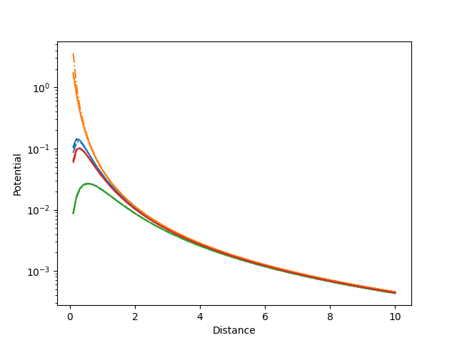
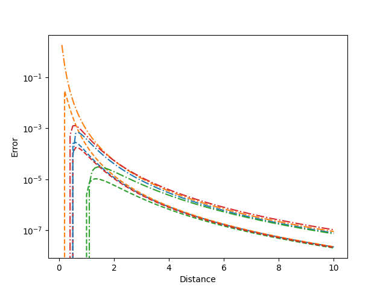
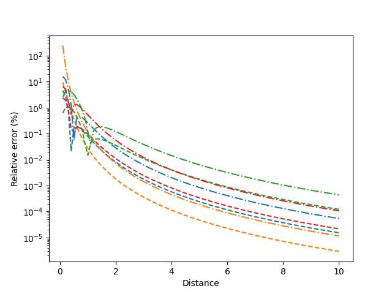

Note
Click here to download the full example code
Triangle dipole density approximation error¶
Compare the exact solution for the potential of dipolar density with magnitude of a linear shape function on a triangle with two approximations.
- 
- 
- 
Out:
Text(0.5, 0, 'Distance')
from bfieldtools.integrals import (
potential_vertex_dipoles,
triangle_potential_dipole_linear,
potential_dipoles,
)
from bfieldtools.mesh_calculus import mass_matrix
from bfieldtools.utils import load_example_mesh
import matplotlib.pyplot as plt
import numpy as np
from scipy.sparse import csc_matrix
mesh = load_example_mesh("unit_disc")
z = np.linspace(0, 10, 101)[1:]
x = np.zeros_like(z)
y = np.zeros_like(z)
points = np.array([x, y, z]).T
R = points[:, None, None, :] - mesh.vertices[mesh.faces][None, :, :, :]
R_v = points[:, None, :] - mesh.vertices[None, :, :]
vertex_areas = mass_matrix(mesh, lumped=True).diagonal()
approx_pot_v = potential_vertex_dipoles(R_v, mesh.vertex_normals, vertex_areas)
approx_pot_f = potential_dipoles(R, mesh.face_normals, mesh.area_faces)
exact_pot_f = triangle_potential_dipole_linear(R, mesh.face_normals, mesh.area_faces)
# Map faces -> vertices
Nf = len(mesh.faces)
Nv = len(mesh.vertices)
M0 = csc_matrix((np.ones(Nf), (np.arange(Nf), mesh.faces[:, 0])), (Nf, Nv))
M1 = csc_matrix((np.ones(Nf), (np.arange(Nf), mesh.faces[:, 1])), (Nf, Nv))
M2 = csc_matrix((np.ones(Nf), (np.arange(Nf), mesh.faces[:, 2])), (Nf, Nv))
exact_pot_v = (
exact_pot_f[:, :, 0] @ M0 + exact_pot_f[:, :, 1] @ M1 + exact_pot_f[:, :, 2] @ M2
)
approx_pot_fv = (
approx_pot_f[:, :, 0] @ M0 + approx_pot_f[:, :, 1] @ M1 + approx_pot_f[:, :, 2] @ M2
)
mask = np.linalg.norm(mesh.vertices, axis=1) < 0.9
mask[5:] = False
RE_fv = (
np.abs((approx_pot_fv[:, mask] - exact_pot_v[:, mask]) / exact_pot_v[1, mask]) * 100
)
RE_v = (
np.abs((approx_pot_v[:, mask] - exact_pot_v[:, mask]) / exact_pot_v[1, mask]) * 100
)
plt.semilogy(z, approx_pot_fv[:, mask], "--", label="potential_dipoles")
plt.gca().set_prop_cycle(None)
plt.semilogy(z, approx_pot_v[:, mask], "-.", label="potential_vertex_dipoles")
plt.gca().set_prop_cycle(None)
plt.semilogy(z, exact_pot_v[:, mask], label="exact_vertex_dipoles")
plt.ylabel("Potential")
plt.xlabel("Distance")
plt.figure()
plt.semilogy(z, (approx_pot_fv - exact_pot_v)[:, mask], "--", label="potential_dipoles")
plt.gca().set_prop_cycle(None)
plt.semilogy(
z, (approx_pot_v - exact_pot_v)[:, mask], "-.", label="potential_vertex_dipoles"
)
plt.ylabel("Error")
plt.xlabel("Distance")
plt.figure()
plt.semilogy(z, RE_fv, "--", label="potential_dipoles")
plt.gca().set_prop_cycle(None)
plt.semilogy(z, RE_v, "-.", label="potential_vertex_dipoles")
plt.ylabel("Relative error (%)")
plt.xlabel("Distance")
Total running time of the script: ( 0 minutes 0.561 seconds)